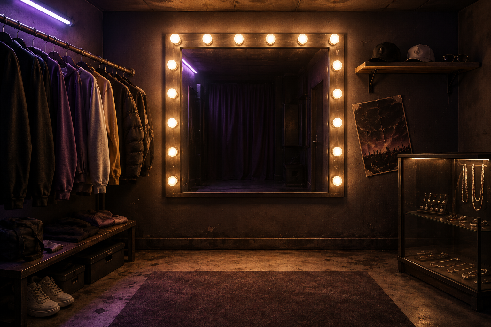

Anni di Fame
01 · Sesso + fisico
caricamento corpo leggero…
Volto
Intero
Sesso
Maschile
Femminile
Altezza
178 cm
Peso
72 kg
Corporatura
media
Struttura
Naso
Occhi
Sopracciglia
Bocca
Mento / Orecchie
Forma volto
base
Base
Ovale
Squadrato
Tondo
Affilato
Linea mandibolare
neutra
Prominenza zigomi
neutra
Guance · volume
neutre
Naso · larghezza
neutro
Naso · lunghezza
neutro
Naso · dimensione
neutra
Naso · punta
neutra
Naso · profilo
neutro
Narici · larghezza
neutre
Occhi · dimensione
neutri
Occhi · distanza
neutra
Colore occhi
marroni
Marroni
Nocciola
Verdi
Azzurri
Grigi
Personalizza
Sopracciglia · altezza
neutra
Sopracciglia · arco
neutro
Sopracciglia · stile
base
Base
Sottili
Spesse
Arcuate
Dritte
Colore sopracciglia
castano scuro
Nere
Cast. scuro
Castane
Bionde
Ramate
Personalizza
Bocca · larghezza
neutra
Bocca · proiezione
neutra
Labbro superiore
neutro
Labbro inferiore
neutro
Angoli bocca
neutri
Mento · lunghezza
neutro
Mento · proiezione
neutra
Mento · punta
neutro
Orecchie · dimensione
neutre
Orecchie · apertura
neutra
Taglio
corto 1
Nessuno
Corto 1
Corto 2
Corto 3
Corto 4
Afro
Bob 1
Bob 2
Treccia
Coda
Lungo
Colore capelli
castano scuro
Originale
Neri
Cast. scuro
Castani
Biondo sc.
Biondi
Ramati
Grigi
Personalizza
01
Corpo
02
Volto
03
Capelli
04
Vestiti
05
Accessori
V92 · treccia helper smooth fit · afro/coda ok
Annulla
Conferma personaggio →